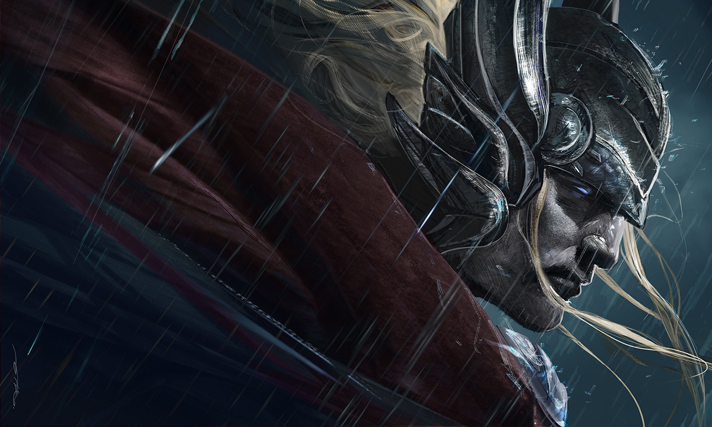

THOR
The hero of thunder
Thor is the god of thunder who carries a magical hammer that only he can lift. This hammer is called a Mjollnir and is Thor’s most iconic symbol. His Mjollnir would return to him like a boomerang when he threw it into the sky. In addition to being the god of thunder, Thor is also the god of lightning, storms, strength, and protection. He is sometimes associated with fertility, protecting mankind, and blessing weddings. Thor possessed long red hair and a beard. He often displays a quick temper and is quick to engage in violence, even if violence may not be necessary.
The Old Norse theonym Þórr (older poetic Þunarr) goes back to an earlier Proto-Norse form reconstructed as Þunraʀ.[3] It is a cognate (linguistic sibling of the same origin) of the medieval Germanic forms Donar (Old High German), Þunor (Old English), Thuner (Old Frisian), and Thunar (Old Saxon).[4] They descend from the Proto-Germanic reconstructed theonym *Þun(a)raz ('Thunder'),[5] which is identical to the name of the ancient Celtic god Taranus (by metathesis–switch of sounds–of an earlier *Tonaros, attested in the dative tanaro and the Gaulish river name Tanarus), and further related to the Latin epithet Tonans (attached to Jupiter), via the common Proto-Indo-European root for 'thunder' *(s)tenh₂-.[6] According to scholar Peter Jackson, those theonyms may have emerged as the result of the fossilization of an original epithet (or epiclesis, i.e. invocational name) of the Proto-Indo-European thunder-god *Perkwunos, since the Vedic weather-god Parjanya is also called stanayitnú- ('Thunderer').[7] The perfect match between the thunder-gods *Tonaros and *Þun(a)raz, which both go back to a common form *ton(a)ros ~ *tṇros, is notable in the context of early Celtic–Germanic linguistic contacts, especially when added to other inherited terms with thunder attributes, such as *Meldunjaz–*meldo- (from *meldh- 'lightning, hammer', i.e. *Perkwunos' weapon) and *Fergunja–*Fercunyā (from *perkwun-iyā 'wooded mountains', i.e. *Perkwunos' realm).[8] The English weekday name Thursday comes from Old English Þunresdæg, meaning 'day of Þunor'. It is cognate with Old Norse Þórsdagr and with Old High German Donarestag. All of these terms derive from the Late Proto-Germanic weekday *Þonaresdag ('Day of *Þun(a)raz'), a calque of Latin Iovis dies ('Day of Jove'; cf. modern Italian giovedì, French jeudi, Spanish jueves). By employing a practice known as interpretatio germanica during the Roman period, ancient Germanic peoples adopted the Latin weekly calendar and replaced the names of Roman gods with their own.[9] Beginning in the Viking Age, personal names containing the theonym Thórr are recorded with great frequency, whereas no examples are known prior to this period. Thórr-based names may have flourished during the Viking Age as a defiant response to attempts at Christianization, similar to the wide scale Viking Age practice of wearing Thor's hammer pendants.[10]
